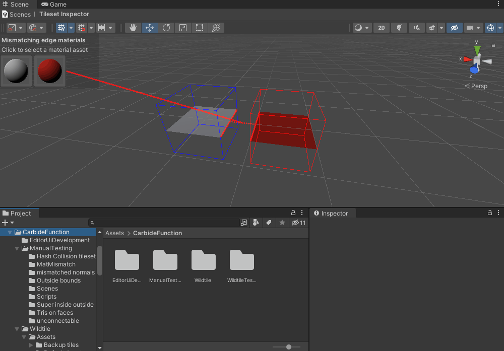
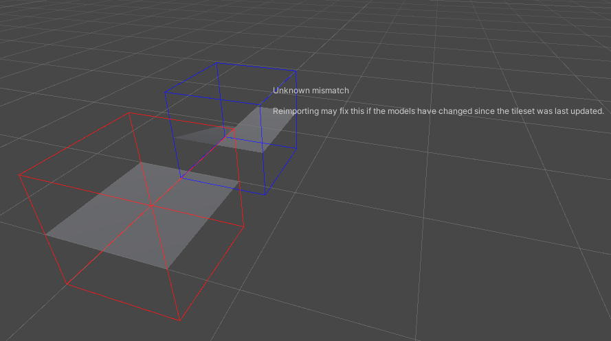

Debugging Connected Modules Using the Tileset Debugger
Wildtile checks many face edge features in sequence to determine if they match. This diagnostics view will show the earliest phase of face matching that fails. In some cases, repairing one phase will show errors in a subsequent phase, other times repairing one phase will be all that is required and the tiles will match afterwards.
Vertex Positions
Wildtile first checks that the vertices match between the two faces. If the faces do not match, all vertices are highlighted.
Matching vertices are marked with green dots and lines connecting the vertices to their partner vertex on the other face.
Mismatched vertices are marked with blue or red dots (depending on whether they are in the blue or red box). If you want the modules to connect to one another, you must either remove these vertices or move them so they match their partner vertex on the other face.

Edges (Including Vertex Order)
Any edges that match will be highlighted in green with a dotted line connecting the edge to its partner edge on the other face.
Edges that do not have a partner are highlighted as red or blue.
If there appears to be a matching edge, check the arrowheads halfway along each edge. If they point in different directions then the polygons face the opposite direction to one another like in the gif below.

Tip
Sometimes two sided polygons can creep into otherwise matching models. This will show as a green dotted line connecting a red or blue edge to a green edge.
Use your modelling software to check the model with the non-green highlighted edge for two sided polygons.
Normals
If the module faces do not match then all edges and normals will be highlighted.
The inspector highlights matching edges in green with magenta normal-sticks, with green dotted lines between them and their partner.
The inspector highlights mismatched edges in red with red normal-sticks, and includes the normal vector values used for comparison. Wildtile multiplies the normal vectors by a large number (usually 64, but this can be changed in the Tileset Importer) and then rounds them to the nearest value.

The rounding fixes issues where computers are not accurate enough to calculate the same value (e.g. 0.75 and 0.7501), but sometimes the inaccuracy spans a rounding boundary. In this case, you will need to edit one of the edges' normals to match the other one.
If Tileset Importer → must match normals is turned off for a material then those edges will have a normal of (0,0,0).
Material Matching
Finally, Wildtile checks that the materials match. Any mismatched materials will show up with a red dotted line between them. The red line is linked to material previews of the two edges' materials in the top left.

You can click either of the materials to select them. If your project window is unlocked then it will also navigate to the material.

Unknown Mismatch

Normally this means the models have been updated and now fit together but the tileset has not been reimported. Use the Reimport button in the Tileset Inspector to recalculate the connectivity.
Errors during import (e.g. message boxes or console messages) may prevent the import, and the modules will remain unconnected until you fix these issues.
If there are no warnings when importing and the modules remain unconnected then please report this on the Wildtile Discord.